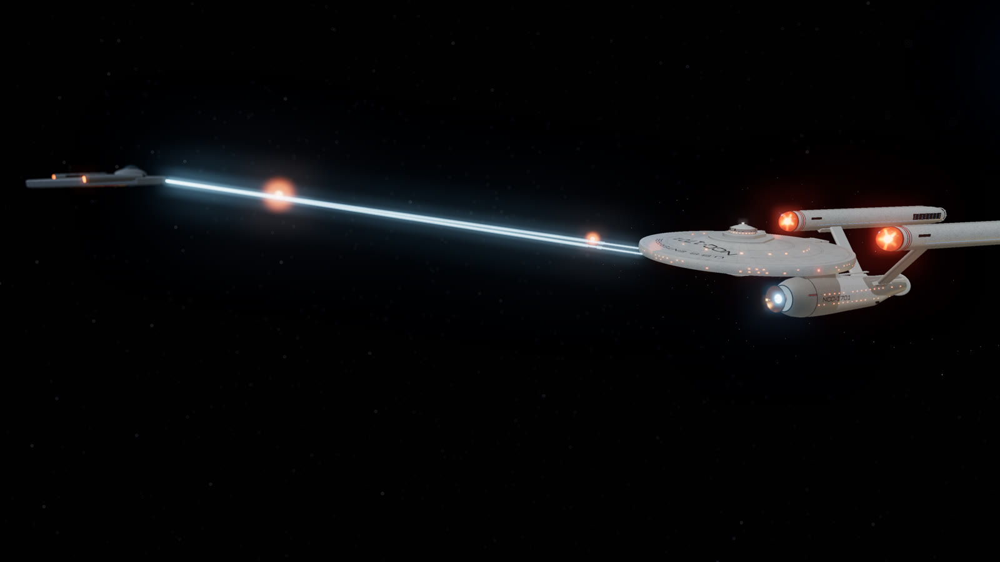
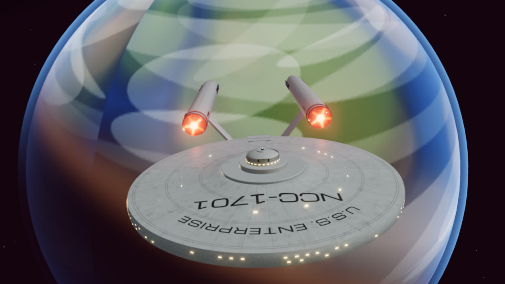
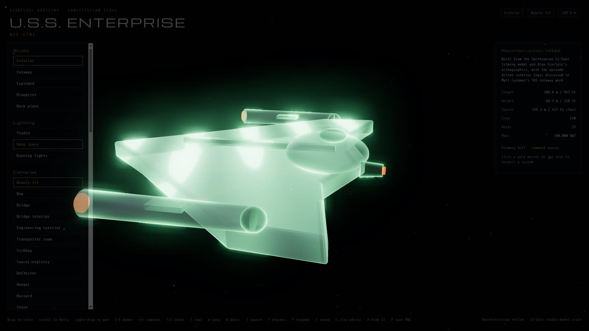
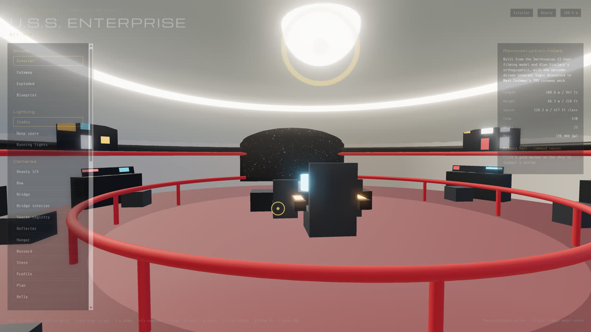
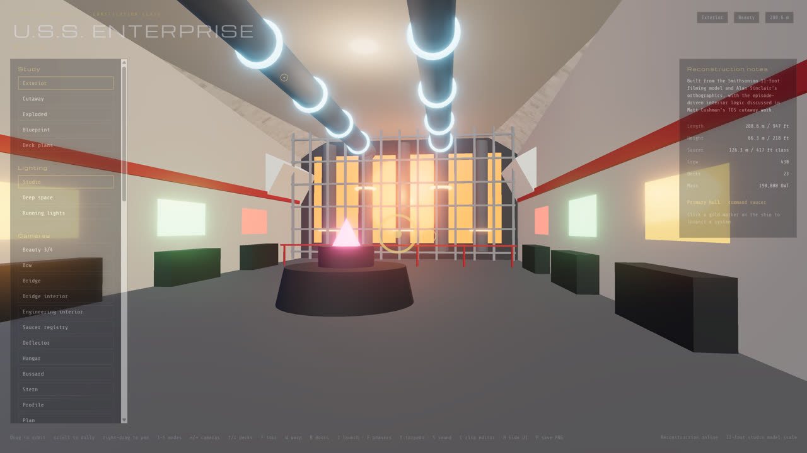
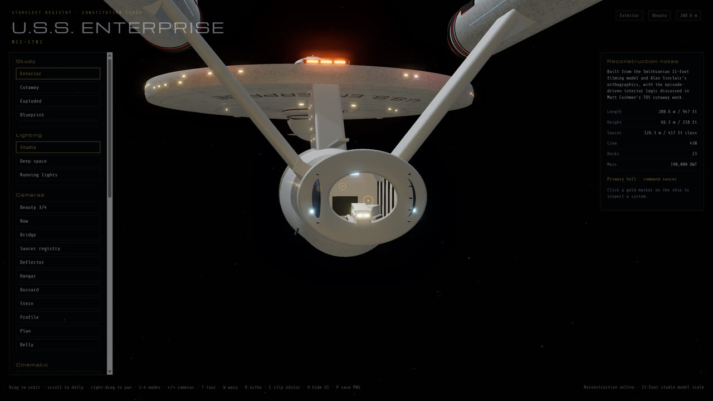
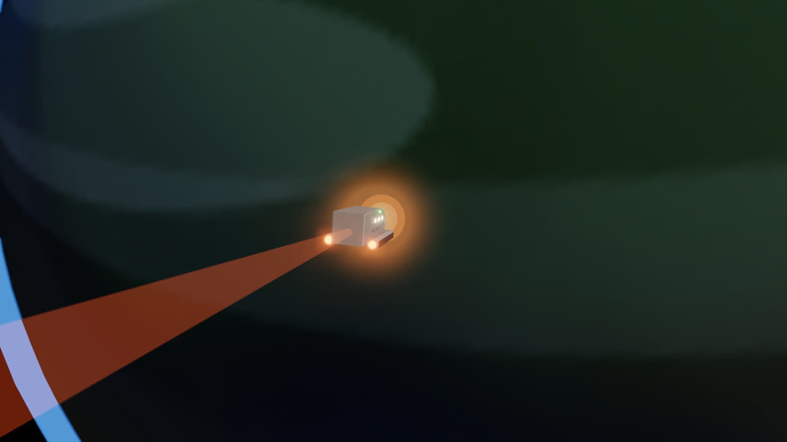
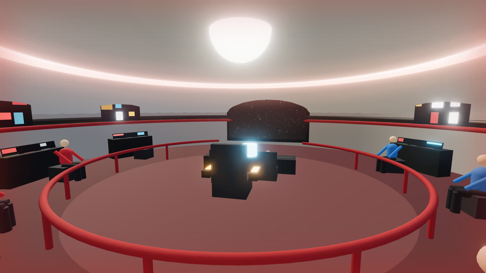
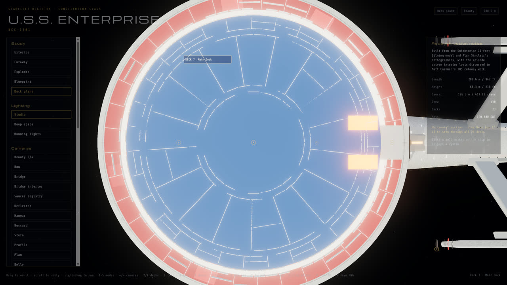
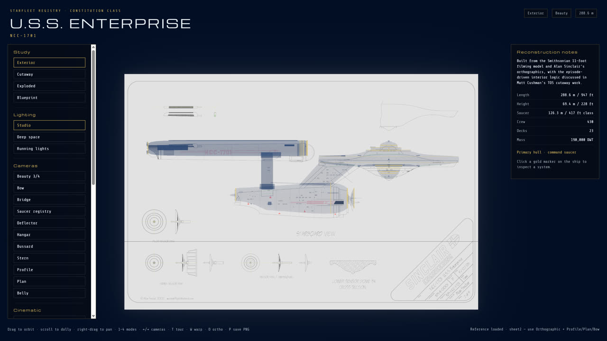

Featured project · Interactive 3D
A fully parametric reconstruction of the original Constitution-class starship, built in Three.js from the Smithsonian 11-foot filming model and Alan Sinclair's orthographics. No imported models — every hull, deck, console and crew figure is generated in code. Walk the bridge, ride the turbolift, launch the Galileo, go to red alert, and take on a Klingon D7 and a cloaked Romulan Bird-of-Prey.
Exterior, a sweeping section-plane cutaway with 23 fitted decks, exploded assembly with part labels, drafting-blue blueprint, and deck-by-deck plans like the Booklet of General Plans.
A TOS bridge under the dome, main engineering with its reactor grille and dilithium table, the transporter room and sickbay — with crew figures for scale who run to stations on red alert.
A real car in a shaft from the bridge alcove down the saucer trunk and along the dorsal into engineering, camera locked inside as the doors open.
Clamshell doors retract into the fantail; the shuttlecraft Galileo taxis out, climbs away, or dives into a planet's atmosphere with a plasma sheath and ion trail.
Phasers and photon torpedoes against a Klingon D7 that fires back with disruptors, and a Romulan Bird-of-Prey that decloaks with a green shimmer and launches plasma torpedoes.
A keyframe clip editor with camera paths, ship pose, effects triggers, depth of field and captions; record to WebM with sound or render PNG frame sequences. Presets include a six-minute showcase film.










Drag to orbit, scroll to dolly, right-drag to pan. Click a gold marker on the ship to inspect a system. The interface fades when idle; move the mouse to bring it back.
Roughly 9,000 lines of hand-written JavaScript. The exterior is lofted from a station table measured off Sinclair's Rev. D sheets (2.154 m per inch of the 134-inch studio model) and painted with canvas-generated textures — the arched registry, concentric rings and pennant stripes. Interiors are generated to fit the hull's actual cross-sections. Sound is a sampled library (Kenney's CC0 effects, Scott Buckley's CC-BY orchestral score) over a procedural WebAudio synth that covers every cue on its own.